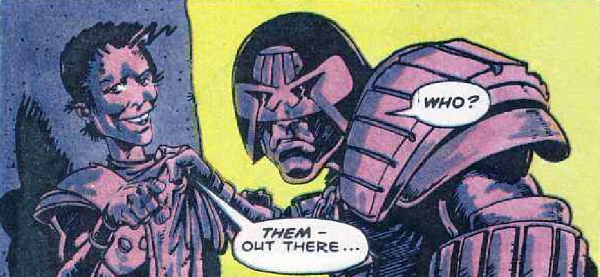

Carrying a "Mental" card allows this Mega-Citizen to avoid some trouble with the law - but he tends to push the boundaries.
Art by Ian Gibson
| Story Title | Parts | Pages | w indicates a wraparound coverCovers | Year(s) | Issues | Writer | Artist | Colourist | Letterer |
|---|---|---|---|---|---|---|---|---|---|
From Judge DreddIt Pays to Be Mental | 1 | 8 | 0 | 1986 | Reprints: JDMS4 (all colour)468 | Alan Grant John Wagnervarious | Ian Gibson | <-- pp1-2, [b&w] | Richard Starkings |
From Judge DreddIt Still Pays to Be Mental | 1 | 6 | Kev Hopgood 1 | 1989 | 657 | John Wagner | Paul Marshall | <-- | Tom Frame |
From Judge DreddStill Mental After All These Years | 1 | 6 | 0 | 2008 | 1608 | John Wagner | Cliff Robinson | Chris Blythe | Annie Parkhouse |
| year | episodes | pages |
| 1984 | 0 | 0 |
| 1985 | 0 | 0 |
| 1986 | 1 | 8 |
| 1987 | 0 | 0 |
| 1988 | 0 | 0 |
| 1989 | 1 | 6 |
| 1990 | 0 | 0 |
| 1991 | 0 | 0 |
| 1992 | 0 | 0 |
| 1993 | 0 | 0 |
| 1994 | 0 | 0 |
| 1995 | 0 | 0 |
| 1996 | 0 | 0 |
| 1997 | 0 | 0 |
| 1998 | 0 | 0 |
| 1999 | 0 | 0 |
| 2000 | 0 | 0 |
| 2001 | 0 | 0 |
| 2002 | 0 | 0 |
| 2003 | 0 | 0 |
| 2004 | 0 | 0 |
| 2005 | 0 | 0 |
| 2006 | 0 | 0 |
| 2007 | 0 | 0 |
| 2008 | 1 | 6 |
| 2009 | 0 | 0 |
| 2010 | 0 | 0 |